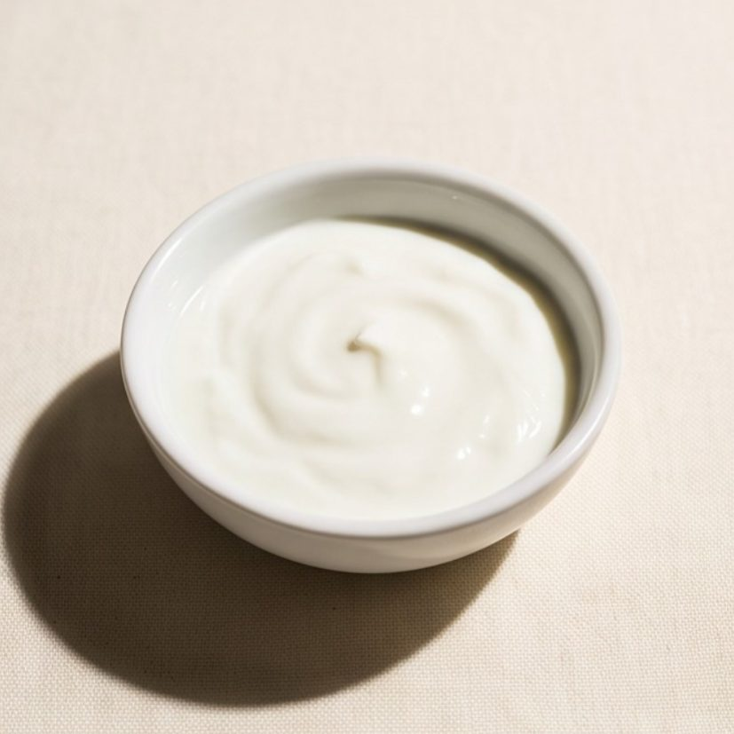

Hair ritual
Warm a little oil (coconut, olive or almond), massage into the scalp for a few minutes and leave for 30 to 60 minutes before washing.

Focus shampoo on the scalp, where oil builds up, and let the suds rinse down the lengths. Two to three washes a week suits most people.

Apply conditioner from mid-lengths to ends, leave for 2 to 3 minutes and rinse with cool or lukewarm water.

Try plain yogurt with a little honey, applied to damp hair for 20 minutes, then rinsed well. Skip any ingredient that irritates you.
Squeeze out extra water with a soft towel, let hair air dry when you can, and brush gently from the ends up.
Natural remedies work differently for everyone. Patch test first. See a doctor or dermatologist for hair loss or scalp conditions.